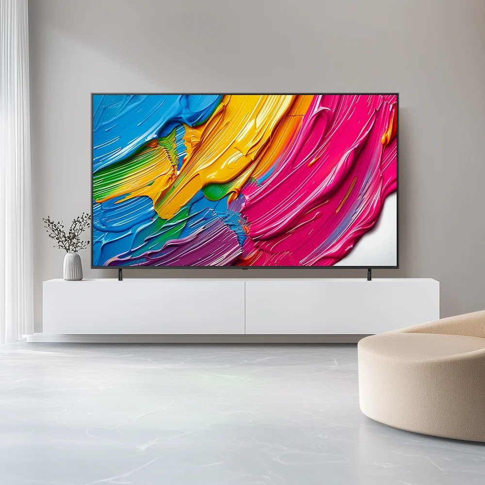
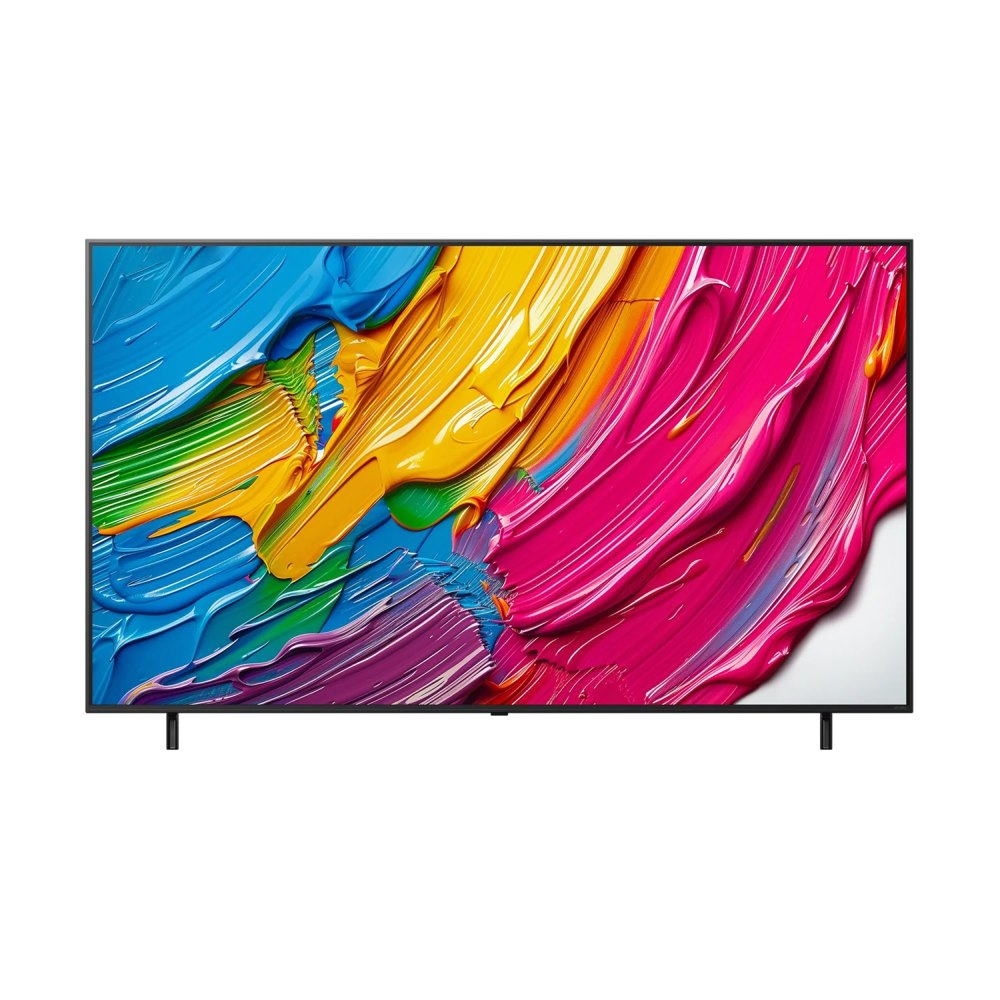
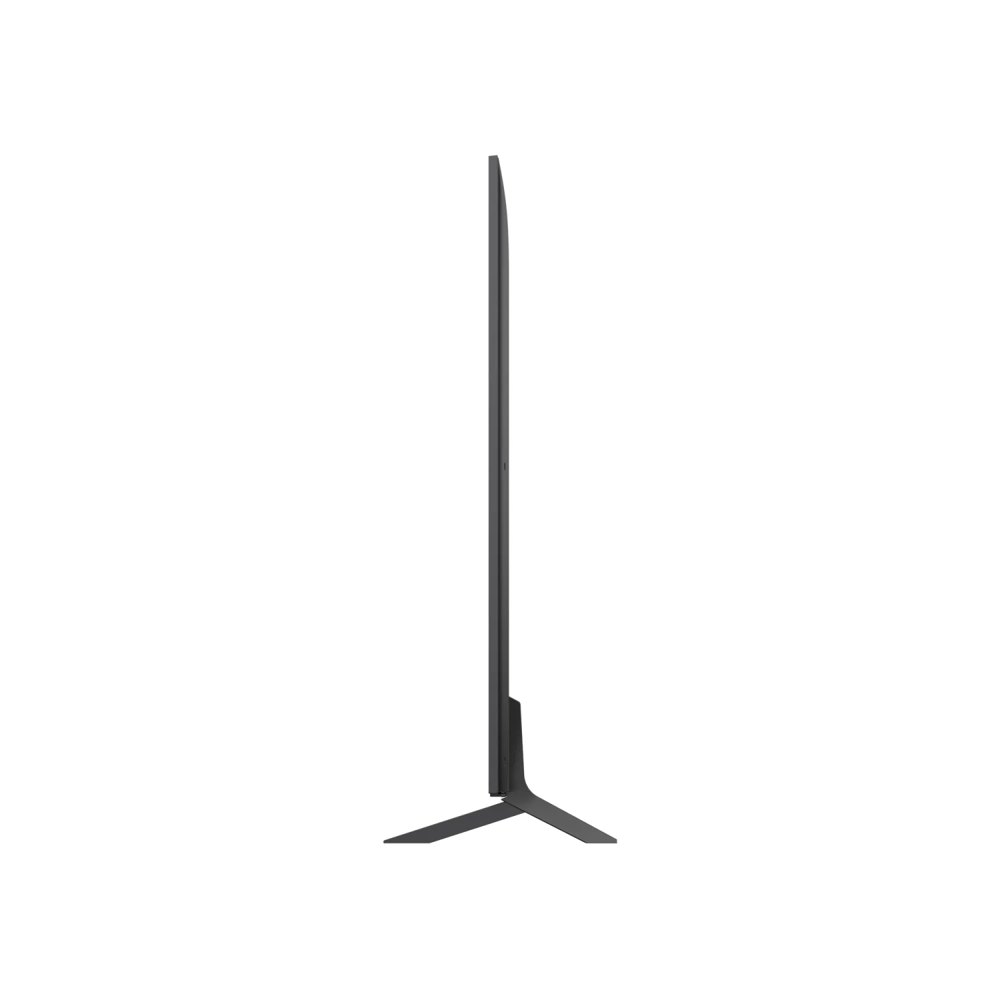
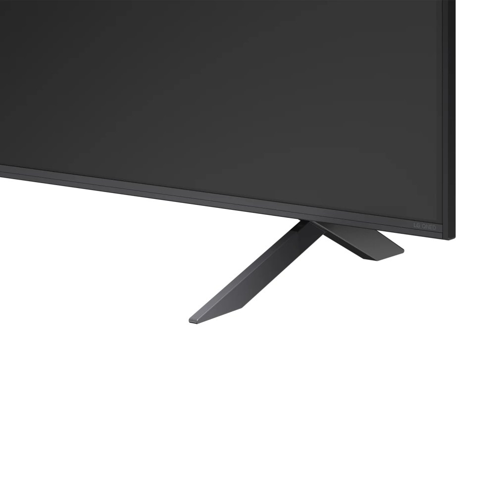
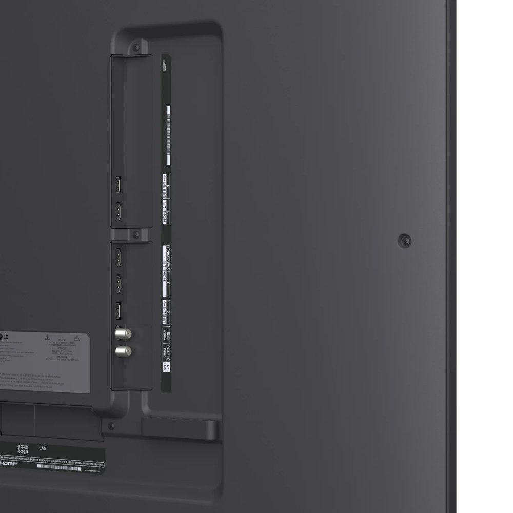

LG QNED AI 75QNED75AEA Review: Overview
This LG QNED AI 75QNED75AEA review covers LG's 2025 75-inch (189 cm) 4K QNED TV for Korea, sold on Naver as a stand bundle that includes LG's S20A soundbar. It is LG's mid-range big-screen option: QNED colour, local dimming and the Alpha 7 Gen8 processor, but a 60 Hz panel and no 120 Hz gaming features.
The bundle had a 3,210,000 KRW list price at launch (May 2025). The LG-authorised Naver Shopping Connect store we checked sold the TV and soundbar bundle for 1,899,000 KRW, and Danawa and Enuri listed about 1,907,000 KRW in November 2026. We checked the specs against LG Korea's product page for the TV and the S20A, and Danawa and Enuri spec sheets. This review is based on those specs; we did not lab-test the panel.
"A 75-inch screen and a soundbar in one box. Worth it for films, sport and family TV; not built for 120 Hz gaming."

Picture Quality: QNED Colour and Local Dimming
LG's QNED TVs combine quantum-dot and NanoCell colour layers on an LED-backlit LCD panel. LG calls the colour system on this model Dynamic QNED Color, and Korean spec sheets list 100% colour volume and about 93% DCI-P3 coverage. The backlight has local dimming, so dark scenes look deeper than on a basic 4K LED TV, though not as deep as on an OLED.
Processing comes from LG's Alpha 7 AI Processor Gen8, with 4K upscaling, genre-based picture tuning, automatic brightness, dynamic tone mapping and Filmmaker Mode. HDR support is HDR10 and HLG. LG does not list Dolby Vision for this model, so streaming apps play their HDR10 versions instead.

The S20A Soundbar Bundle and Sound
On its own, the TV has 20 W, 2.0-channel speakers with AI Sound Pro, which LG says creates a virtual 9.1.2 surround effect, plus Clear Voice Pro for dialogue. The bundled LG S20A adds a compact 2.0-channel, 50 W bar with four speaker units, dual tweeters and passive radiators.
With LG's WOW Orchestra, the TV speakers and the S20A play together. WOW Interface puts soundbar volume and EQ on the TV screen. The bar connects by HDMI ARC (the TV's HDMI 2 supports eARC) or Bluetooth 5.3, and a wall bracket and HDMI cable are in the box. At 650 mm wide, LG designed it for 120–163 cm TVs, so it looks small under a 189 cm screen.
Design and Installation
The panel is 30.9 mm deep with thin black bezels. The included SA-85DO75 stand has two feet that can be fitted near the ends of the TV (1,349 mm apart) or close to the centre (524 mm), which helps if your cabinet is narrower than the TV. With the stand, the TV is 1,032 mm tall and 359 mm deep. You can also wall-mount it (VESA 400 × 300); LG Korea charges extra for some installation options.
Before delivery, measure your cabinet, doorways and lift, and decide where the soundbar and cables will go. At about 1.68 m wide, the TV suits a sofa about 2.3–2.5 m from the screen.


Gaming and Smart Features
- Gaming: 60 Hz panel, VRR up to 60 Hz, ALLM, HGIG and Game Optimizer; GeForce NOW cloud gaming is supported.
- Ports: three HDMI inputs (eARC on HDMI 2), two USB 2.0 ports, LAN, optical audio out, Wi-Fi 5 and Bluetooth 5.1.
- Smart TV: webOS 25 with Netflix and YouTube, Apple AirPlay, Google Cast, LG ThinQ app control and an AI chatbot.
- Remote: a standard remote is included. Voice features such as Voice ID need LG's AI Magic Remote, which is sold separately in Korea.

Key Specs
| Spec | LG QNED AI 75QNED75AEA + S20A |
|---|---|
| Screen | 75 inch (189 cm), 4K UHD 3,840 × 2,160, 60 Hz |
| Panel / colour | LED backlight with local dimming; Dynamic QNED Color |
| Processor | Alpha 7 AI Processor Gen8 |
| HDR | HDR10, HLG, dynamic tone mapping, Filmmaker Mode |
| TV sound | 20 W, 2.0 ch, AI Sound Pro (virtual 9.1.2) |
| Soundbar | LG S20A: 2.0 ch, 50 W, 650 × 63 × 99 mm, 2.2 kg, Bluetooth 5.3 |
| Connections | HDMI × 3 (eARC on HDMI 2), USB 2.0 × 2, LAN, optical, Wi-Fi 5, Bluetooth 5.1 |
| Size without stand | 1,677 × 965 × 30.9 mm |
| Size with stand | 1,677 × 1,032 × 359 mm |
| Weight | 33.0 kg (34.0 kg with stand) |
| Stand | SA-85DO75; feet 1,349 mm or 524 mm apart |
| VESA | 400 × 300 mm |
| Power | AC 220–240 V; 205 W rated, 85.8 W typical |
| Energy rating | Korean efficiency grade 1 |
| Made in | Indonesia (TV); Korean launch May 2025 |
| Korean price | List 3,210,000 KRW; 1,899,000 KRW on the LG-authorised Naver listing at time of writing |
Specs come from LG Korea's 75QNED75AEA and S20A product pages and the Danawa and Enuri spec sheets; prices are from the LG-authorised Naver listing and Korean price-comparison sites in November 2026. Brightness and dimming-zone counts are not published, and we did not lab-test the panel.
How It Compares
| LG QNED75 75" + S20A (this bundle) | Samsung Neo QLED QNH70 75" | LG OLED (C-series) | |
|---|---|---|---|
| Backlight | LED, local dimming | Quantum Mini LED dimming | Self-lit OLED pixels |
| Refresh rate | 60 Hz, VRR to 60 Hz | 60 Hz, no VRR | 120 Hz or higher, VRR |
| HDR | HDR10, HLG | HDR10+ | Dolby Vision, HDR10 |
| Sound | 20 W TV + 50 W S20A soundbar | 20 W, no soundbar | TV speakers only |
| Depth | 30.9 mm | 26.6 mm | Varies by size |
| Best for | A big screen plus better sound in one purchase | Brighter Mini LED contrast | Gaming and dark-room films |
Pros & Cons
| Pros | Cons |
|---|---|
| 75-inch 4K screen with a soundbar in the box | 60 Hz panel; no 120 Hz gaming |
| WOW Orchestra makes TV and soundbar play together | No Dolby Vision, only HDR10 and HLG |
| Stand feet fit wide or narrow cabinets | S20A is small for a 189 cm screen |
| webOS 25 with AirPlay and Google Cast | Only a standard remote; AI Magic Remote is extra |
| Energy grade 1 | Korean 220 V model; not for U.S. use |
Who It Suits (and Who Should Skip It)
- Yes: Living rooms with a sofa about 2.3–2.5 m from the screen.
- Yes: Buyers who want a 75-inch TV and a soundbar without shopping for them separately.
- Yes: Homes that mainly watch broadcast TV, sport, YouTube and streaming dramas.
- No: Console gamers who need 120 Hz or full VRR; choose an LG OLED or a higher QNED.
- No: Buyers outside Korea; choose the LG QNED model sold for your country's voltage and broadcast system.
LG QNED 75QNED75AEA FAQ
What is the LG 75QNED75AEA?
It is LG's 2025 Korean-market 75-inch (189 cm) QNED AI 4K TV, model 75QNED75AEA. The Naver Shopping Connect bundle we looked at pairs the stand version with LG's compact S20A soundbar. It uses an LED backlight with local dimming, LG's Dynamic QNED Color, the Alpha 7 AI Processor Gen8 and webOS 25.
Is the LG QNED75 good for gaming?
For casual gaming, yes; for fast competitive gaming, no. The panel is 60 Hz, and VRR works only up to 60 Hz. It does support ALLM (auto low-latency mode), HGIG and LG's Game Optimizer dashboard. If you want 120 Hz for a PS5 or Xbox Series X, look at a higher QNED or an LG OLED.
What does the bundled S20A soundbar add?
The S20A is a small 2.0-channel, 50 W soundbar (650 × 63 × 99 mm, 2.2 kg) with Dolby Digital and DTS, HDMI ARC and Bluetooth 5.3. With LG's WOW Orchestra, the TV speakers handle mids and highs while the soundbar fills in the lower range. It is a clear upgrade on the TV's own 20 W speakers, but not a home-theatre system.
How big is it and how wide does my TV cabinet need to be?
The TV is 1,677 × 965 × 30.9 mm without the stand and 33.0 kg (34.0 kg with stand). With the stand fitted it is 1,032 mm tall and 359 mm deep. LG lists the stand width as 1,349 mm (feet at the ends) or 524 mm (feet in the centre), so a narrower cabinet can still work. Korean retailers suggest a viewing distance of about 2.3 m.
Can I use the Korean 75QNED75AEA in the U.S.?
We don't recommend it. The Korean model runs on 220–240 V, has Korean broadcast tuners and is serviced under LG Korea's warranty. LG sells QNED TVs in the U.S. under different model numbers, so the Amazon button on this page searches for 75-inch LG QNED models sold there.
LG 75-Inch QNED 4K Smart TVs
The Korean 75QNED75AEA bundle is sold through Korean retailers. In the U.S., LG sells QNED TVs under different model numbers; compare current 75-inch listings on Amazon.